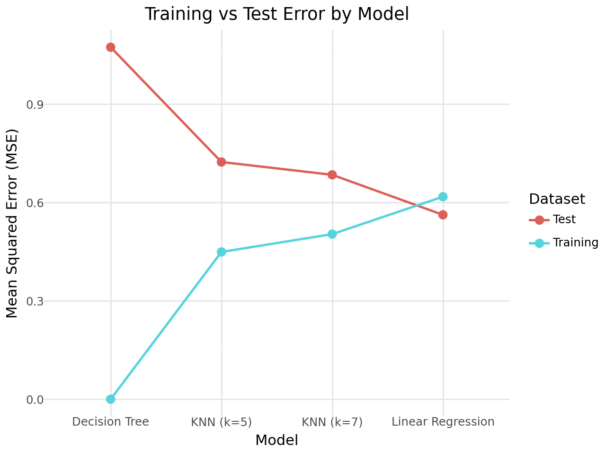

# Code Here
from palmerpenguins import load_penguins
import pandas as pd
from sklearn.pipeline import Pipeline
from sklearn.model_selection import train_test_split
from sklearn.linear_model import LinearRegression
from sklearn.metrics import r2_score, mean_squared_error
from sklearn.preprocessing import StandardScaler
from sklearn.metrics import accuracy_score, classification_report
from plotnine import *
df = load_penguins()Palmer Penguins Modeling
Import the Palmer Penguins dataset and print out the first few rows.
Suppose we want to predict bill_depth_mm using the other variables in the dataset.
Dummify all variables that require this.
df| species | island | bill_length_mm | bill_depth_mm | flipper_length_mm | body_mass_g | sex | year | |
|---|---|---|---|---|---|---|---|---|
| 0 | Adelie | Torgersen | 39.1 | 18.7 | 181.0 | 3750.0 | male | 2007 |
| 1 | Adelie | Torgersen | 39.5 | 17.4 | 186.0 | 3800.0 | female | 2007 |
| 2 | Adelie | Torgersen | 40.3 | 18.0 | 195.0 | 3250.0 | female | 2007 |
| 3 | Adelie | Torgersen | NaN | NaN | NaN | NaN | NaN | 2007 |
| 4 | Adelie | Torgersen | 36.7 | 19.3 | 193.0 | 3450.0 | female | 2007 |
| ... | ... | ... | ... | ... | ... | ... | ... | ... |
| 339 | Chinstrap | Dream | 55.8 | 19.8 | 207.0 | 4000.0 | male | 2009 |
| 340 | Chinstrap | Dream | 43.5 | 18.1 | 202.0 | 3400.0 | female | 2009 |
| 341 | Chinstrap | Dream | 49.6 | 18.2 | 193.0 | 3775.0 | male | 2009 |
| 342 | Chinstrap | Dream | 50.8 | 19.0 | 210.0 | 4100.0 | male | 2009 |
| 343 | Chinstrap | Dream | 50.2 | 18.7 | 198.0 | 3775.0 | female | 2009 |
344 rows × 8 columns
Let’s use the other variables to predict bill_depth_mm. Prepare your data and fit the following models on the entire dataset:
- Your best multiple linear regression model from before
- Two kNN models (for different values of K)
- A decision tree model
Create a plot like the right plot of Fig 1. in our Model Validation chapter with the training and test error plotted for each of your four models.
Which of your models was best?
pen_dumb = pd.get_dummies(df).dropna()
# Target
y = pen_dumb['bill_depth_mm']
# Features = everything except the target
X = pen_dumb.drop(columns=['bill_depth_mm'])
# Split properly on X and y (easier & safer than splitting the index)
from sklearn.model_selection import train_test_split
X_train_3, X_test_3, y_train, y_test = train_test_split(
X, y, test_size=0.2, random_state=42
)
# Fit linear regression
from sklearn.linear_model import LinearRegression
from sklearn.metrics import r2_score, mean_squared_error
model3 = LinearRegression().fit(X_train_3, y_train)
yhat_3 = model3.predict(X_test_3)
print("R² (Model 3):", r2_score(y_test, yhat_3))
print("MSE (Model 3):", mean_squared_error(y_test, yhat_3))
predictions = pd.DataFrame({'model3pred': yhat_3, 'actual': y_test.values}, index=y_test.index)
predictions.head()
predictionsR² (Model 3): 0.8645513288883002
MSE (Model 3): 0.5623267797925907| model3pred | actual | |
|---|---|---|
| 238 | 14.042787 | 14.4 |
| 117 | 18.812748 | 20.5 |
| 114 | 18.036756 | 20.7 |
| 43 | 19.574554 | 19.7 |
| 127 | 19.154285 | 18.3 |
| ... | ... | ... |
| 174 | 14.242814 | 14.5 |
| 73 | 19.494485 | 18.9 |
| 76 | 18.093777 | 16.8 |
| 17 | 19.672476 | 20.7 |
| 67 | 19.031857 | 19.1 |
69 rows × 2 columns
from sklearn.model_selection import train_test_split, GridSearchCV
from sklearn.pipeline import Pipeline
from sklearn.neighbors import KNeighborsRegressor
target = 'bill_depth_mm'
X = pen_dumb.drop(columns=[target])
y = pen_dumb[target]
X_train, X_test, y_train, y_test = train_test_split(
X, y, test_size=0.2, random_state=42
)
knn_pipe = Pipeline([
('scaler', StandardScaler()),
('knn', KNeighborsRegressor(n_neighbors=5))
])
knn_pipe.fit(X_train, y_train)
y_pred_knn = knn_pipe.predict(X_test)
print("KNN R²:", r2_score(y_test, y_pred_knn))
print("KNN MSE:", mean_squared_error(y_test, y_pred_knn))
param_grid = {
'knn__n_neighbors': [3,5,7,9,11,15],
'knn__weights': ['uniform', 'distance'],
'knn__p': [1, 2]
}
gscv = GridSearchCV(knn_pipe, param_grid, cv = 5, scoring = 'r2')
gscv.fit(X_train, y_train)
print("\nBest KNN params:", gscv.best_params_)
print("CV Best R²:", gscv.best_score_)
y_pred_best = gscv.predict(X_test)
print("Test R² (best KNN):", r2_score(y_test, y_pred_best))
print("Test MSE (best KNN):", mean_squared_error(y_test, y_pred_best))KNN R²: 0.8257498393681983
KNN MSE: 0.7234144927536235
Best KNN params: {'knn__n_neighbors': 7, 'knn__p': 1, 'knn__weights': 'uniform'}
CV Best R²: 0.8254829562796935
Test R² (best KNN): 0.842949582935518
Test MSE (best KNN): 0.6520082815734995from sklearn.tree import DecisionTreeRegressor
dt_pipe = Pipeline([
('dt', DecisionTreeRegressor(random_state=42))
])
dt_pipe.fit(X_train, y_train)
y_pred_dt = dt_pipe.predict(X_test)
print("\nDecision Tree R²:", r2_score(y_test, y_pred_dt))
print("Decision Tree MSE:", mean_squared_error(y_test, y_pred_dt))
Decision Tree R²: 0.7414293447740277
Decision Tree MSE: 1.0734782608695652import pandas as pd
from sklearn.pipeline import Pipeline
from sklearn.preprocessing import StandardScaler
from sklearn.linear_model import LinearRegression
from sklearn.neighbors import KNeighborsRegressor
from sklearn.tree import DecisionTreeRegressor
from sklearn.metrics import mean_squared_error
from plotnine import ggplot, aes, geom_line, geom_point, labs, theme_minimal
models = {
"Linear Regression": Pipeline([
("lin", LinearRegression())
]),
"KNN (k=5)": Pipeline([
("scale", StandardScaler()),
("knn5", KNeighborsRegressor(n_neighbors=5))
]),
"KNN (k=7)": Pipeline([
("scale", StandardScaler()),
("knn7", KNeighborsRegressor(n_neighbors=7))
]),
"Decision Tree": Pipeline([
("dt", DecisionTreeRegressor(random_state=42))
])
}
records = []
for name, pipe in models.items():
pipe.fit(X_train, y_train)
yhat_train = pipe.predict(X_train)
yhat_test = pipe.predict(X_test)
train_mse = mean_squared_error(y_train, yhat_train)
test_mse = mean_squared_error(y_test, yhat_test)
records += [
{"Model": name, "Dataset": "Training", "MSE": train_mse},
{"Model": name, "Dataset": "Test", "MSE": test_mse}
]
df_plot = pd.DataFrame(records)
(
ggplot(df_plot, aes(x="Model", y="MSE", group="Dataset", color="Dataset"))
+ geom_line(size=1)
+ geom_point(size=3)
+ labs(
title="Training vs Test Error by Model",
x="Model",
y="Mean Squared Error (MSE)"
)
+ theme_minimal()
)

best_row = df_plot[df_plot["Dataset"] == "Test"].sort_values("MSE").iloc[0]
print(f" Best Model: {best_row['Model']} — Test MSE = {best_row['MSE']:.4f}") Best Model: Linear Regression — Test MSE = 0.5623